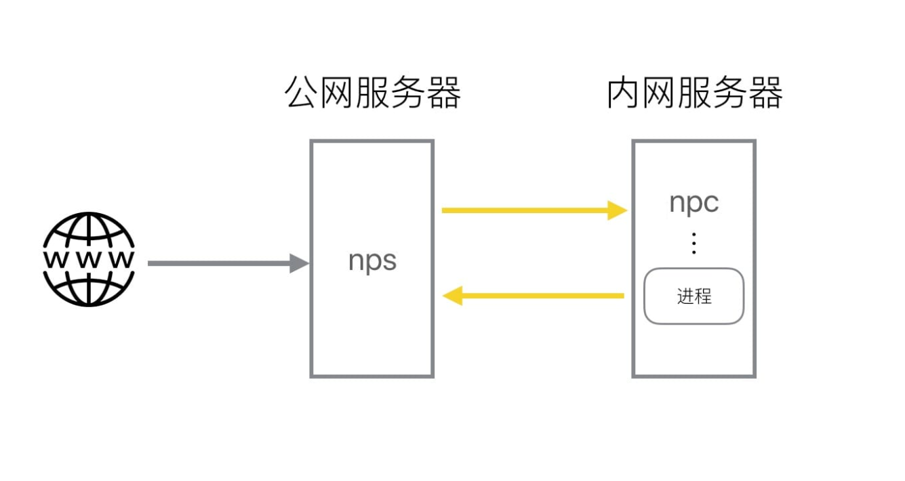
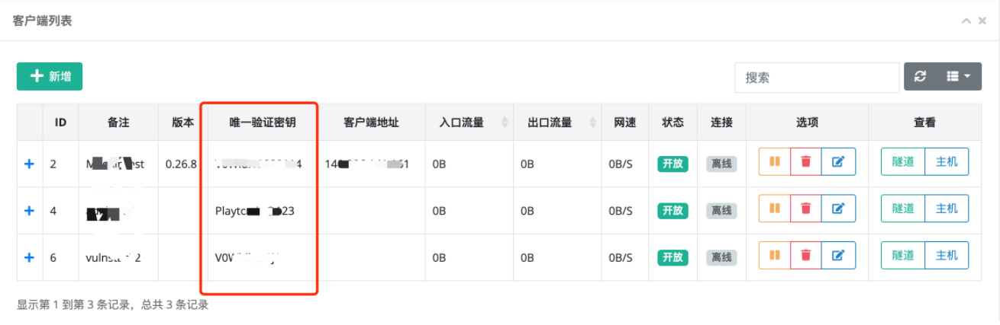
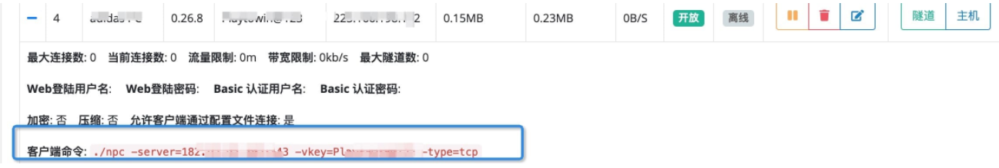
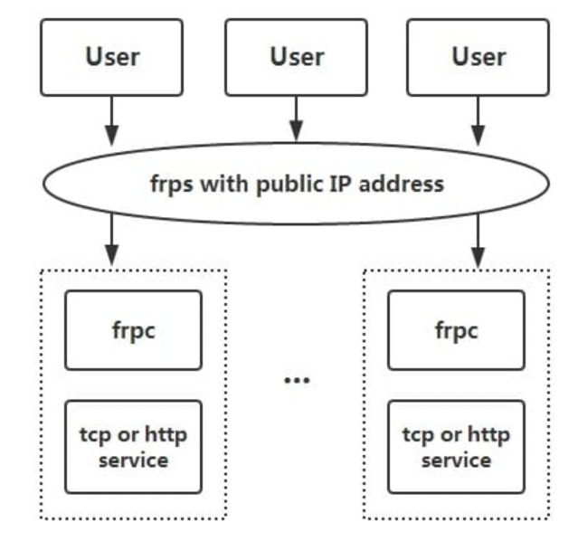
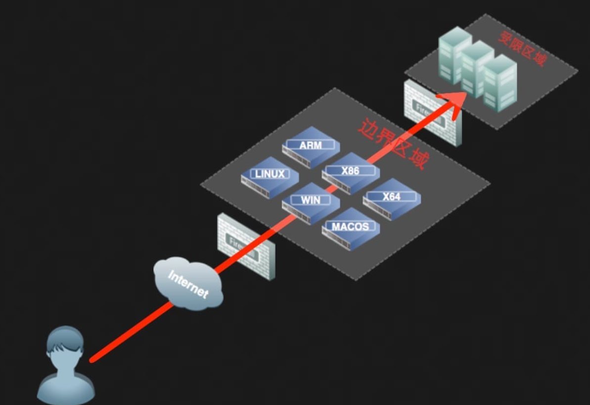
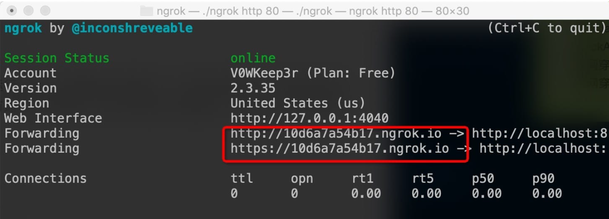
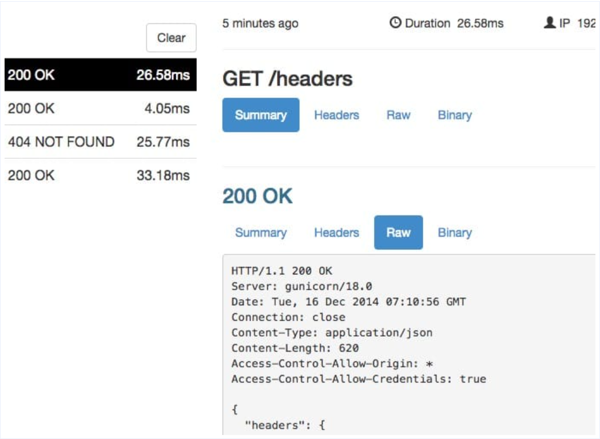

常见内网穿透工具
前言
本文以渗透的视角，总结几种个人常用的内网穿透，内网代理工具，介绍其简单原理和使用方法。
一、nps-npc
1.1 简介
nps是一款轻量级、高性能、功能强大的内网穿透代理服务器。目前支持tcp、udp流量转发，可支持任何tcp、udp上层协议（访问内网网站、本地支付接口调试、ssh访问、远程桌面，内网dns解析等等……），此外还支持内网http代理、内网socks5代理、p2p等，并带有功能强大的web管理端。
- 一台有公网IP的服务器（VPS）运行服务端（NPS）
- 一个或多个运行在内网的服务器或者PC运行客户端（NPC）

1.2 特点
- Go语言编写
- 支持跨平台
- 支持多种协议的代理
- web管理端
1.3 使用方法
https://github.com/ehang-io/nps/releases
NPS
安装配置
找到自己服务器相应版本的server：
cd ~
wget https://github.com/cnlh/nps/releases/download/v0.23.2/linux_amd64_server.tar.gz
tar xzvf linux_amd64_server.tar.gz
cd ~/nps
在nps目录下面会有一个nps可执行文件、conf配置目录和web网页目录，我们只需要修改conf/nps.conf即可：
vim conf/nps.conf
需要改一下#web下面的几个参数，
web_host= 服务器IP或者域名
web_username= admin（登录用户名）
web_password= 你的密码
web_port=8080（web管理端口）
修改#bridge 可以更改 NPC的连接端口。比如我们拿到一台权限受限的服务器，有防火墙，可能只有部分端口（80，443）可以出网，就需要修改成出网端口。
##bridge
bridge_type=tcp
bridge_port=443 # 修改连接端口
bridge_ip=0.0.0.0
启动
#Mac/Linux
./nps test|start|stop|restart|status 测试配置文件|启动|停止|重启|状态
#Windows
nps.exe test|start|stop|restart|status 测试配置文件|启动|停止|重启|状态
NPC
./npc -server=你的IP:8024 -vkey=唯一验证密码 -type=tcp
 新建好客户端后，也可以在+中看到，详细的客户端连接命令： 
web管理端
在客户端界面可以通过新增的方式添加客户端连接，每一个连接的vkey都是唯一区分的。 每一个客户端，在建立连接后，都可以建立多个不同协议的隧道，这一个个隧道就是不同的代理了。 通过不同的协议和端口就可以连接代理的内网机器。
二、frp
2.1 简介
frp 是一个专注于内网穿透的高性能的反向代理应用，支持 TCP、UDP、HTTP、HTTPS 等多种协议。可以将内网服务以安全、便捷的方式通过具有公网 IP 节点的中转暴露到公网。 
2.2 特点
- 客户端服务端通信支持 TCP、KCP 以及 Websocket 等多种协议。
- 端口复用，多个服务通过同一个服务端端口暴露。
- 跨平台，但是支持的比nps少一点
- 多种插件，提供很多功能
2.3 使用方法
下载：https://github.com/fatedier/frp/releases
通过 rdp 访问家里的机器
修改 frps.ini 文件，为了安全起见，这里最好配置一下身份验证，服务端和客户端的 common 配置中的 token 参数一致则身份验证通过：
# frps.ini
[common]
bind_port = 7000
# 用于身份验证，请自行修改，要保证服务端与客户端一致
token = abcdefgh
启动 frps： ./frps -c ./frps.ini
修改 frpc.ini 文件，假设 frps 所在服务器的公网 IP 为 x.x.x.x：
# frpc.ini
[common]
server_addr = x.x.x.x
server_port = 7000
# 用于身份验证，请自行修改，要保证服务端与客户端一致
token = abcdefgh
[rdp]
type = tcp
local_ip = 127.0.0.1
local_port = 3389
remote_port = 6000
启动 frpc：
./frpc -c ./frpc.ini
通过 rdp 访问远程的机器，地址为：
x.x.x.x:6000
开机自启
针对 Windows 系统，为了便于使用，可以配置一下开机的时候静默启动。 在 frpc.exe 的同级目录创建一个 start_frpc.vbs：
'start_frpc.vbs
'请根据实际情况修改路径
CreateObject("WScript.Shell").Run """D:\Program Files\frp_windows_amd64\frpc.exe""" & "-c" & """D:\Program Files\frp_windows_amd64\frpc.ini""",0
复制 start_frpc.vbs 文件，打开以下目录，注意将
<USER_NAME>
改为你的用户名：
C:\Users\
通过 SSH 访问公司内网机器
frps 的部署步骤同上。 启动 frpc，配置如下：
# frpc.ini
[common]
server_addr = x.x.x.x
server_port = 7000
# 用于身份验证，请自行修改，要保证服务端与客户端一致
token = abcdefgh
[ssh]
type = tcp
local_ip = 127.0.0.1
local_port = 22
remote_port = 6000
通过 SSH 访问内网机器，假设用户名为 test：
ssh -oPort=6000 test@x.x.x.x
通过自定义域名访问部署于内网的 Web 服务
有时想要让其他人通过域名访问或者测试我们在本地搭建的 Web 服务，但是由于本地机器没有公网 IP，无法将域名解析到本地的机器，通过 frp 就可以实现这一功能，以下示例为 http 服务，https 服务配置方法相同， vhost_http_port 替换为 vhost_https_port， type 设置为 https 即可。 修改 frps.ini 文件，设置 http 访问端口为 8080：
# frps.ini
[common]
bind_port = 7000
vhost_http_port = 8080
# 用于身份验证，请自行修改，要保证服务端与客户端一致
token = abcdefgh
启动 frps：
./frps -c ./frps.ini
修改 frpc.ini 文件，假设 frps 所在的服务器的 IP 为 x.x.x.x，local_port 为本地机器上 Web 服务对应的端口， 绑定自定义域名 www.yourdomain.com:
# frpc.ini
[common]
server_addr = x.x.x.x
server_port = 7000
# 用于身份验证，请自行修改，要保证服务端与客户端一致
token = abcdefgh
[web]
type = http
local_port = 80
custom_domains = www.yourdomain.com
启动 frpc：
./frpc -c ./frpc.ini
将 www.yourdomain.com 的域名 A 记录解析到 IP x.x.x.x，如果服务器已经有对应的域名，也可以将 CNAME 记录解析到服务器原先的域名。
通过浏览器访问 http://www.yourdomain.com:8080 即可访问到处于内网机器上的 Web 服务。
对外提供简单的文件访问服务
通过 static_file 插件可以对外提供一个简单的基于 HTTP 的文件访问服务。 frps 的部署步骤同上。 启动 frpc，启用 static_file 插件，配置如下：
# frpc.ini
[common]
server_addr = x.x.x.x
server_port = 7000
# 用于身份验证，请自行修改，要保证服务端与客户端一致
token = abcdefgh
[test_static_file]
type = tcp
remote_port = 6000
plugin = static_file
# 要对外暴露的文件目录
plugin_local_path = /tmp/file
# 访问 url 中会被去除的前缀，保留的内容即为要访问的文件路径
plugin_strip_prefix = static
plugin_http_user = abc
plugin_http_passwd = abc
通过浏览器访问 http://x.x.x.x:6000/static/ 来查看位于 /tmp/file 目录下的文件，会要求输入已设置好的用户名和密码。
2.4 常用功能
统计面板（Dashboard）
通过浏览器查看 frp 的状态以及代理统计信息展示。
注：Dashboard 尚未针对大量的 proxy 数据展示做优化，如果出现 Dashboard 访问较慢的情况，请不要启用此功能。
需要在 frps.ini 中指定 dashboard 服务使用的端口，即可开启此功能：
[common]
dashboard_port = 7500
# dashboard 用户名密码，默认都为 admin
dashboard_user = admin
dashboard_pwd = admin
打开浏览器通过 http://[server_addr]:7500 访问 dashboard 界面，用户名密码默认为 admin。
加密与压缩
这两个功能默认是不开启的，需要在 frpc.ini 中通过配置来为指定的代理启用加密与压缩的功能，压缩算法使用 snappy：
# frpc.ini
[ssh]
type = tcp
local_port = 22
remote_port = 6000
use_encryption = true
use_compression = true
如果公司内网防火墙对外网访问进行了流量识别与屏蔽，例如禁止了 SSH 协议等，通过设置 use_encryption = true，将 frpc 与 frps 之间的通信内容加密传输，将会有效防止流量被拦截。
如果传输的报文长度较长，通过设置 use_compression = true 对传输内容进行压缩，可以有效减小 frpc 与 frps 之间的网络流量，加快流量转发速度，但是会额外消耗一些 CPU 资源。
TLS
从 v0.25.0 版本开始 frpc 和 frps 之间支持通过 TLS 协议加密传输。通过在 frpc.ini 的 common 中配置 tls_enable = true 来启用此功能，安全性更高。
为了端口复用，frp 建立 TLS 连接的第一个字节为 0x17。
注意： 启用此功能后除 xtcp 外，不需要再设置 use_encryption。
代理限速
目前支持在客户端的代理配置中设置代理级别的限速，限制单个 proxy 可以占用的带宽。
# frpc.ini
[ssh]
type = tcp
local_port = 22
remote_port = 6000
bandwidth_limit = 1MB
在代理配置中增加 bandwidth_limit 字段启用此功能，目前仅支持 MB 和 KB 单位。
范围端口映射
在 frpc 的配置文件中可以指定映射多个端口，目前只支持 tcp 和 udp 的类型。
这一功能通过 range: 段落标记来实现，客户端会解析这个标记中的配置，将其拆分成多个 proxy，每一个 proxy 以数字为后缀命名。
例如要映射本地 6000-6005, 6007 这 6 个端口，主要配置如下：
# frpc.ini
[range:test_tcp]
type = tcp
local_ip = 127.0.0.1
local_port = 6000-6006,6007
remote_port = 6000-6006,6007
实际连接成功后会创建 8 个 proxy，命名为 test_tcp_0, test_tcp_1 ... test_tcp_7。
三、ew
3.1 简介
EW 是一套便携式的网络穿透工具，具有 SOCKS v5服务架设和端口转发两大核心功能，可在复杂网络环境下完成网络穿透。但是，现在工具已经不更新了。。。 
3.2 特点
- 轻量级，C语言编写
- 可以设置多级代理
- 跨平台
- 但是只支持Socks5代理
3.3 使用方法
以下使用方法均摘自：http://rootkiter.com/EarthWorm/ 以下所有样例，如无特殊说明代理端口均为1080，服务均为SOCKSv5代理服务. 该工具共有 6 种命令格式（ssocksd、rcsocks、rssocks、lcx_slave、lcx_listen、lcx_tran）。
1. 正向 SOCKS v5 服务器
$ ./ew -s ssocksd -l 1080
2. 反弹 SOCKS v5 服务器
这个操作具体分两步： a) 先在一台具有公网 ip 的主机A上运行以下命令：
$ ./ew -s rcsocks -l 1080 -e 8888
b) 在目标主机B上启动 SOCKS v5 服务 并反弹到公网主机的 8888端口
$ ./ew -s rssocks -d 1.1.1.1 -e 8888
成功。
3. 多级级联
工具中自带的三条端口转发指令， 它们的参数格式分别为：
$ ./ew -s lcx_listen -l 1080 -e 8888
$ ./ew -s lcx_tran -l 1080 -f 2.2.2.3 -g 9999
$ ./ew -s lcx_slave -d 1.1.1.1 -e 8888 -f 2.2.2.3 -g 9999
通过这些端口转发指令可以将处于网络深层的基于TCP的服务转发至根前,比如 SOCKS v5。 首先提供两个“二级级联”本地SOCKS测试样例： a) lcx_tran 的用法
$ ./ew -s ssocksd -l 9999
$ ./ew -s lcx_tran -l 1080 -f 127.0.0.1 -g 9999
b) lcx_listen、lcx_slave 的用法
$ ./ew -s lcx_listen -l 1080 -e 8888
$ ./ew -s ssocksd -l 9999
$ ./ew -s lcx_slave -d 127.0.0.1 -e 8888 -f 127.0.0.1 -g 9999
再提供一个“三级级联”的本地SOCKS测试用例以供参考
$ ./ew -s rcsocks -l 1080 -e 8888
$ ./ew -s lcx_slave -d 127.0.0.1 -e 8888 -f 127.0.0.1 -g 9999
$ ./ew -s lcx_listen -l 9999 -e 7777
$ ./ew -s rssocks -d 127.0.0.1 -e 7777
数据流向: SOCKS v5 -> 1080 -> 8888 -> 9999 -> 7777 -> rssocks
四、ngrok
4.1 简介
ngrok 是一个反向代理，通过在公共端点和本地运行的 Web 服务器之间建立一个安全的通道，实现内网主机的服务可以暴露给外网。ngrok 可捕获和分析所有通道上的流量，便于后期分析和重放，所以ngrok可以很方便地协助服务端程序测试。
4.2 特点
- 官方维护，一般较为稳定
- 跨平台，闭源
- 有流量记录和重发功能
4.3 使用方法
进入ngrok官网（https://ngrok.com/），注册ngrok账号并下载ngrok； 根据官网给定的授权码，运行如下授权命令； ./ngrok authtoken 1hAotxhmORtzCYvUc3BsxDBPh1H_**
./ngrok http 80即可将机器的80端口http服务暴露到公网，并且会提供一个公网域名。  可以通过官网的UI界面查看数据包和流量等等（但是要付费）  还可以通过一些命令将内网的文件和其他TCP服务 暴露到公网中。 有授权的设置文件共享
ngrok http -auth="user:password" file:///Users/alan/share
无授权的设置文件共享
ngrok http "file:///C:\Users\alan\Public Folder"
将主机的3389的TCP端口暴露到公网
ngrok tcp 3389
更多使用方法参考：https://ngrok.com/docs